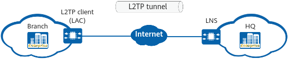

Typical L2TP Scenarios
L2TP can be used for interconnection between the enterprise HQ and branches so that branch users and HQ users can communicate with each other. To allow users of an enterprise branch to access the HQ, an L2TP client is deployed at the branch to automatically initiate dial-up to an LNS for establishing an L2TP tunnel and session. In this way, branch users do not need to initiate dial-up, and can access the HQ network as easily as if they were accessing their branch network. This scenario is known as the L2TP client-initiated or call-LNS scenario.
In Figure 1, the L2TP client is deployed on the egress gateway of the enterprise branch. The branch egress gateway functions as the L2TP client and the HQ egress gateway functions as the LNS. After L2TP is deployed between the L2TP client and LNS, the L2TP client sends an L2TP tunnel establishment request to the LNS. After an L2TP tunnel is established, traffic from branch users to the HQ is transmitted to the peer end through the L2TP tunnel. In this scenario, the L2TP tunnel is established between the L2TP client and LNS and is transparent to users.

When multiple L2TP clients need to connect to the HQ intranet, you can configure the L2TP clients to obtain IP addresses on different network segments through different L2TP tunnels.

The device can only function as an L2TP client.